Bản in: tắt «Tiêu đề và chân trang» của trình duyệt.
Tài khoản được cấp quyền menu nhóm AI kiểm định và Kết nối Camera GTVT thao tác: danh sách phát hiện mặt đường, phát hiện tài sản / thiết bị mới, ước lượng sửa chữa, dự báo bảo trì, ITS biển báo / cọc tiêu, ITS ANPR quá tải / tốc độ.
| Luồng | Mô tả | Bắt đầu | Kết thúc | Người thực hiện |
|---|---|---|---|---|
| Đăng nhập | Vào phần mềm | Màn đăng nhập | Bảng điều khiển | Tài khoản được cấp |
| Kiểm định mặt đường | Tra cứu / thêm phát hiện hư hỏng | Menu AI kiểm định mặt đường | Lưu phiếu | Cán bộ kỹ thuật |
| Phát hiện tài sản | Ghi candidate thiết bị mới | Menu Phát hiện tài sản / thiết bị mới | Lưu candidate | Cán bộ hiện trường |
| Ước lượng | Tạo phiếu từ sự cố hoặc detections | Menu Ước lượng sửa chữa | Lưu / xác nhận | Cán bộ kỹ thuật |
| Dự báo bảo trì | Thêm đoạn, chạy dự báo, ghi chú | Menu AI dự báo bảo trì | Lưu ghi chú / gắn kế hoạch | Cán bộ kế hoạch |
| ITS biển báo | Ghi candidate biển báo / cọc tiêu | Menu ITS biển báo / cọc tiêu | Lưu candidate | Cán bộ ITS |
| ITS ANPR | Ghi sự kiện quá tải / tốc độ | Menu ITS ANPR · Quá tải / tốc độ | Lưu sự kiện | Cán bộ ITS |
graph TD
A[Đăng nhập] --> B[AI kiểm định mặt đường]
A --> C[Phát hiện tài sản / thiết bị mới]
A --> D[Ước lượng sửa chữa]
A --> E[AI dự báo bảo trì]
A --> F[ITS biển báo / cọc tiêu]
A --> G[ITS ANPR]
B --> B2[Tạo mới]
B2 --> B3[Lưu]
C --> C2[Tạo mới]
C2 --> C3[Lưu]
D --> D2[Tạo từ sự cố]
D2 --> D3[Tạo]
E --> E2[Thêm đoạn]
E2 --> E3[Tạo]
F --> F2[Tạo mới]
F2 --> F3[Lưu]
G --> G2[Tạo]
G2 --> G3[Lưu]
Mục đích: xác thực tài khoản để sử dụng phần mềm.
Cách thực hiện:
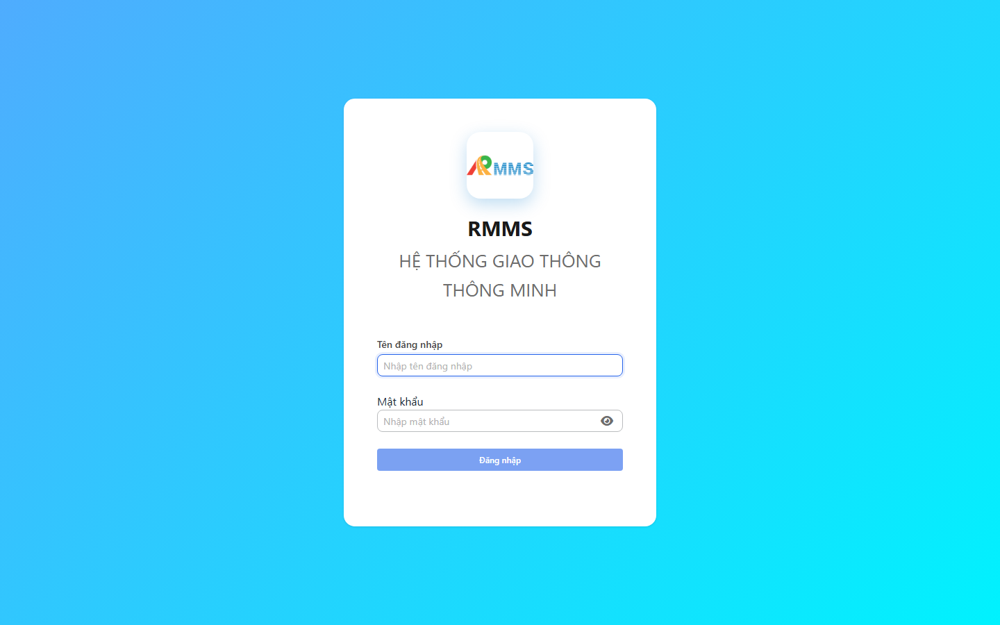
Nút Đăng nhập xếp dọc trên màn hẹp.
* = bắt buộc khi Lưu / Tạo. Ô trống = không bắt buộc.Mục đích: tra cứu phát hiện hư hỏng mặt đường và mở phiếu chi tiết.
Cách thực hiện:
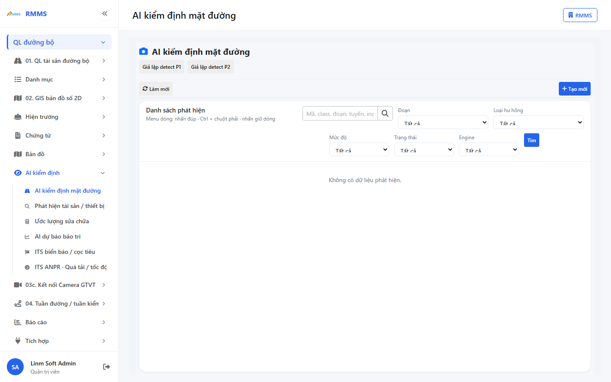
| Cột | Ý nghĩa |
|---|---|
| Mã | Mã phát hiện |
| Class | Loại hư hỏng |
| Score | Độ tin cậy |
| Severity | Mức độ |
| Section | Đoạn |
| Route | Tuyến |
| Status | Trạng thái |
| Engine | Nguồn nhận dạng |
| Incident | Mã sự cố gắn |
Mục đích: ghi phiếu phát hiện hư hỏng mặt đường.
Cách thực hiện:
*.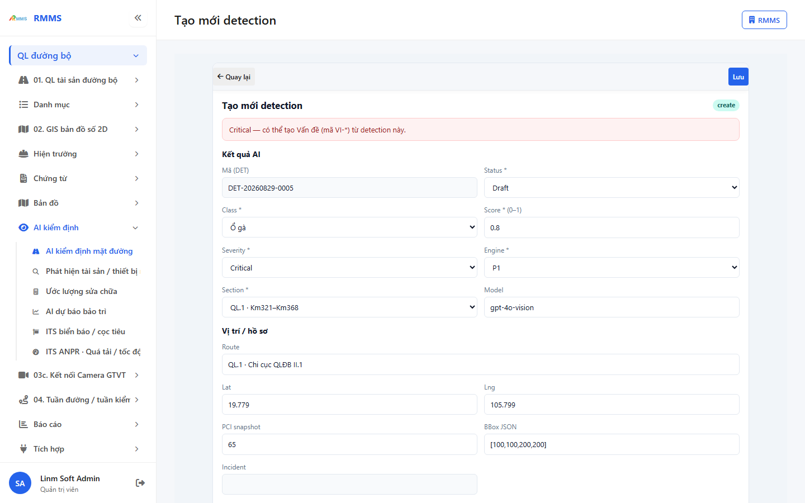
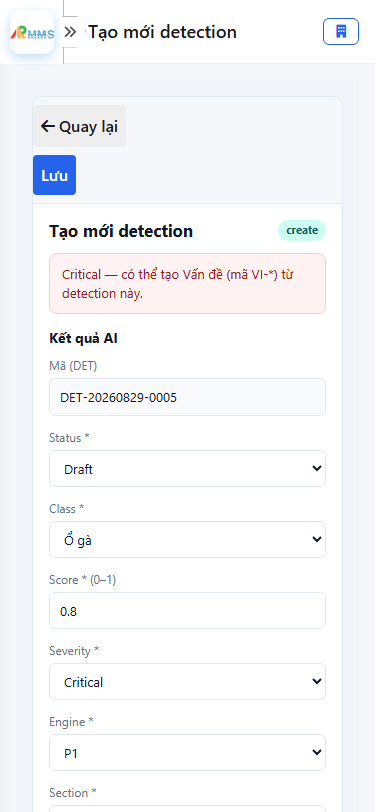
Quay lại và Lưu xếp dọc trên màn hẹp.
* = bắt buộc khi Lưu.
| Nhãn trên màn | * | Cách điền |
|---|---|---|
| Mã (DET) | Hệ thống sinh, chỉ đọc | |
| Status | * | Chọn trạng thái |
| Class | * | Chọn loại hư hỏng |
| Score (0–1) | * | Số từ 0 đến 1 |
| Severity | * | Chọn mức độ |
| Engine | * | Chọn nguồn nhận dạng |
| Section | * | Chọn đoạn |
| Model | Phiên bản mô hình | |
| Route | Tên tuyến | |
| Lat | Vĩ độ | |
| Lng | Kinh độ | |
| PCI snapshot | Chỉ số PCI | |
| BBox JSON | Khung nhận dạng | |
| Incident | Mã sự cố, chỉ đọc | |
| Ghi chú | Văn bản |
| Case | Thao tác | Kết quả |
|---|---|---|
| Thành công | Điền đủ ô * · Nhấn Lưu | Phiếu ghi · danh sách cập nhật |
Thiếu * | Để trống ≥1 ô * · Nhấn Lưu | Không ghi · ô * báo lỗi |
| Dữ liệu không hợp lệ | Score ngoài 0–1 · Nhấn Lưu | Không ghi · ô Score báo lỗi |
Mục đích: tra cứu candidate tài sản / thiết bị mới trên tuyến.
Cách thực hiện:
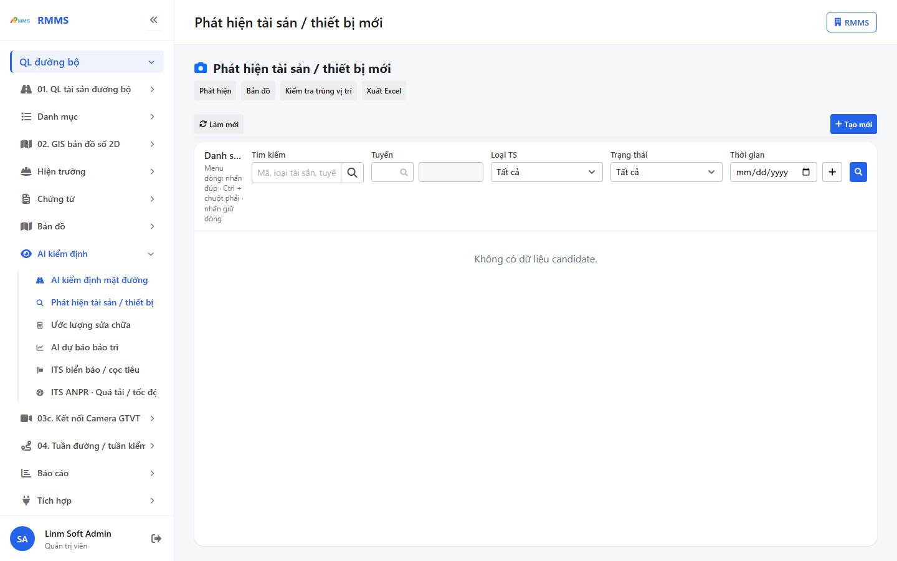
| Cột | Ý nghĩa |
|---|---|
| Mã | Mã candidate |
| Loại TS | Loại tài sản |
| Độ tin cậy (%) | Điểm nhận dạng |
| Tọa độ | Vĩ độ / kinh độ |
| Tuyến | Tuyến gắn |
| Trạng thái | Trạng thái xử lý |
| Nguồn | Nguồn nhận dạng |
| Trùng vị trí | Cảnh báo trùng |
| Mã Asset | Mã sau xác nhận |
Mục đích: ghi candidate phát hiện tài sản / thiết bị mới.
Cách thực hiện:
*.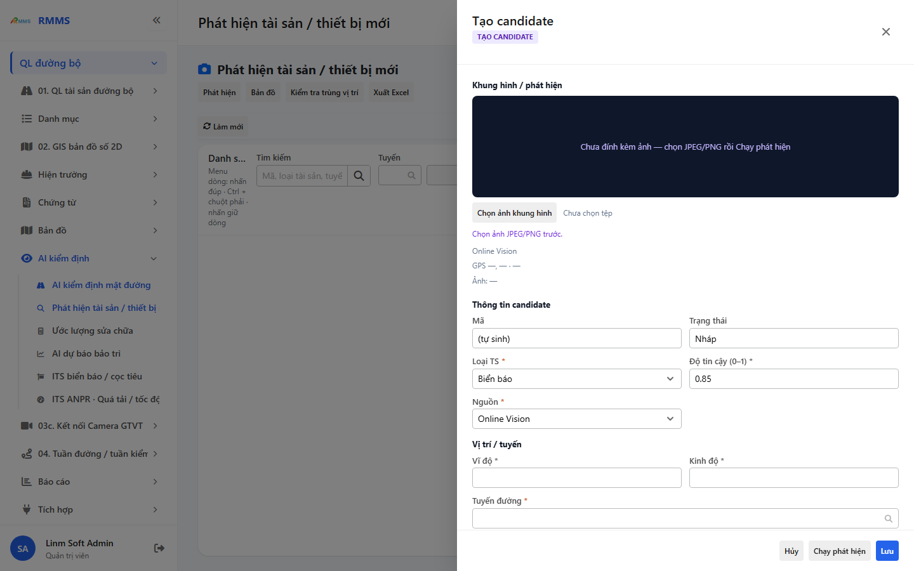
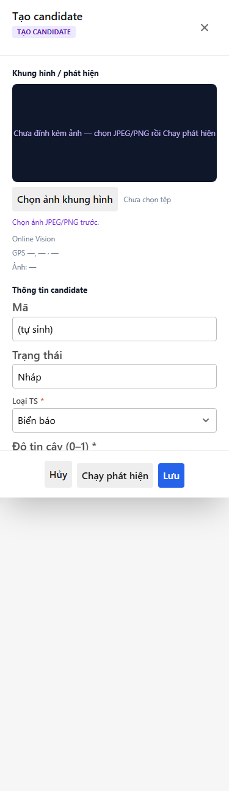
Hủy · Chạy phát hiện · Lưu xếp dọc trên màn hẹp.
* = bắt buộc khi Lưu.
| Nhãn trên màn | * | Cách điền |
|---|---|---|
| Mã | Chỉ đọc | |
| Trạng thái | Chỉ đọc | |
| Loại TS | * | Chọn loại |
| Độ tin cậy (0–1) | * | Số từ 0 đến 1 |
| Nguồn | * | Chọn nguồn |
| Vĩ độ | * | Số |
| Kinh độ | * | Số |
| Tuyến đường | * | Tra cứu tuyến |
| Đoạn | Mã đoạn | |
| Chuyến tuần đường | Mã chuyến | |
| Ghi chú | Văn bản |
| Case | Thao tác | Kết quả |
|---|---|---|
| Thành công | Điền đủ ô * · Nhấn Lưu | Candidate ghi · danh sách cập nhật |
Thiếu * | Để trống ≥1 ô * · Nhấn Lưu | Không ghi · banner trường bắt buộc |
| Dữ liệu không hợp lệ | Ảnh vượt dung lượng cho phép | Không nhận tệp |
Mục đích: tra cứu phiếu ước lượng chi phí sửa chữa.
Cách thực hiện:
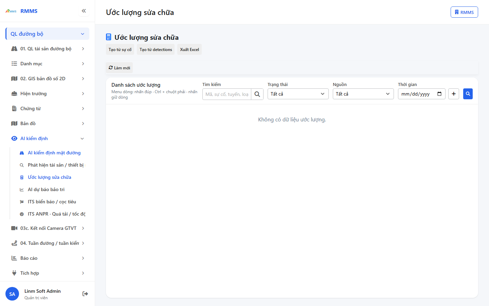
| Cột | Ý nghĩa |
|---|---|
| Mã | Mã ước lượng |
| Sự cố | Sự cố / vấn đề nguồn |
| Tuyến / đoạn | Vị trí |
| Loại hư hỏng | Loại hư hỏng |
| Mức độ | Mức độ |
| Trạng thái | Trạng thái phiếu |
| Tổng tiền | Thành tiền |
| Cập nhật | Thời điểm cập nhật |
Mục đích: tạo phiếu ước lượng gắn một sự cố / vấn đề.
Cách thực hiện:
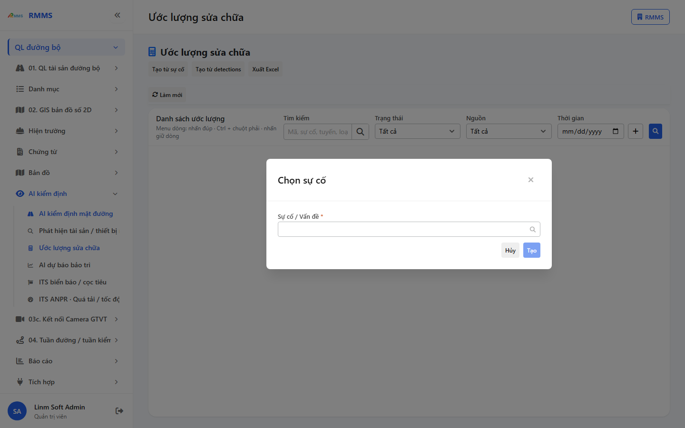
* = bắt buộc khi Tạo / Lưu.
| Nhãn trên màn | * | Cách điền |
|---|---|---|
| Sự cố / Vấn đề | * | Tra cứu mã hoặc tên |
| Nguồn | * | Chọn trên phiếu sau khi tạo |
| Loại hư hỏng | * | Chọn |
| Diện tích (m²) | * | Số |
| Mức độ | * | Chọn |
| Dòng chi phí | * | Ít nhất một dòng khi Lưu |
| Case | Thao tác | Kết quả |
|---|---|---|
| Thành công | Chọn sự cố · Nhấn Tạo · điền đủ * · Nhấn Lưu | Phiếu ghi · danh sách cập nhật |
Thiếu * | Không chọn sự cố · Nhấn Tạo | Không tạo · thông báo chọn sự cố |
| Dữ liệu không hợp lệ | Lưu phiếu không có dòng chi phí | Không ghi · banner yêu cầu dòng chi phí |
Mục đích: xem thứ hạng đoạn đường cần bảo trì và mở chi tiết dự báo.
Cách thực hiện:
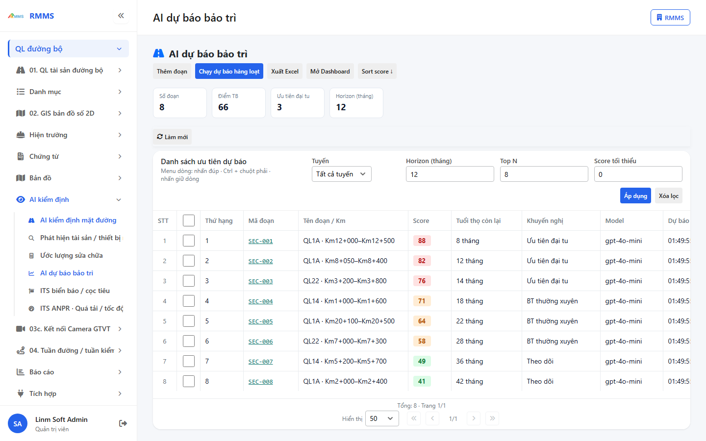
| Cột | Ý nghĩa |
|---|---|
| Thứ hạng | Thứ tự ưu tiên |
| Mã đoạn | Mã đoạn |
| Tên đoạn / Km | Tên / lý trình |
| Score | Điểm dự báo |
| Tuổi thọ còn lại | Tháng còn lại |
| Khuyến nghị | Khuyến nghị bảo trì |
| Model | Mô hình |
| Dự báo lúc | Thời điểm chạy |
Mục đích: thêm đoạn vào danh sách dự báo.
Cách thực hiện:
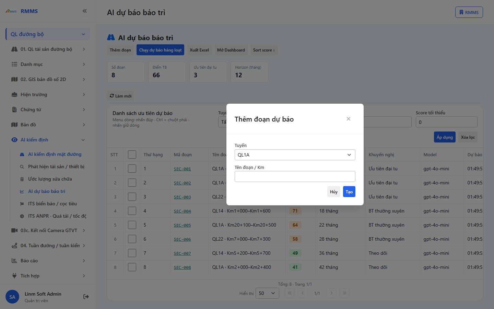
* = bắt buộc khi Tạo.
| Nhãn trên màn | * | Cách điền |
|---|---|---|
| Tuyến | * | Chọn tuyến |
| Tên đoạn / Km | Tên hoặc lý trình |
| Case | Thao tác | Kết quả |
|---|---|---|
| Thành công | Chọn tuyến · Nhấn Tạo | Đoạn thêm · danh sách cập nhật |
Thiếu * | Chưa chọn tuyến | Không tạo |
| Dữ liệu không hợp lệ | Trùng đoạn trên cùng tuyến | Không ghi · thông báo lỗi |
Mục đích: tra cứu candidate biển báo / cọc tiêu.
Cách thực hiện:
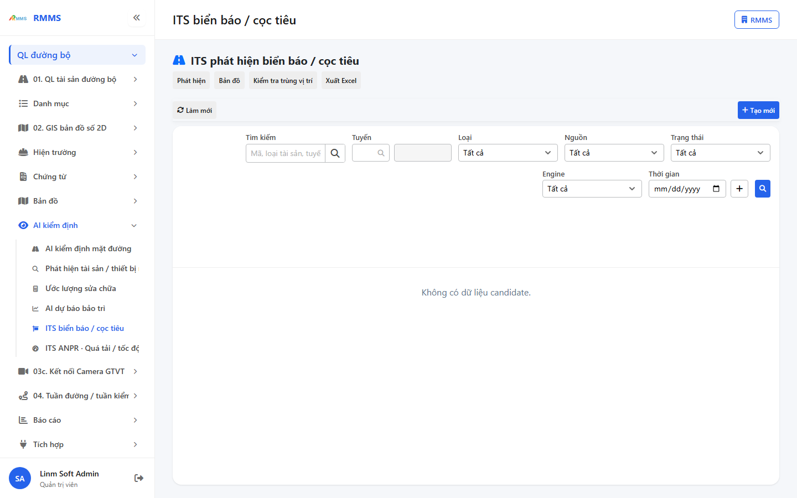
| Cột | Ý nghĩa |
|---|---|
| Mã | Mã candidate |
| Loại | Loại đối tượng |
| Score(%) | Độ tin cậy |
| Tọa độ | Vĩ độ / kinh độ |
| Tuyến | Tuyến |
| Nguồn | Nguồn ảnh |
| TT | Trạng thái |
| Engine | Nguồn nhận dạng |
| Mã Asset | Mã sau xác nhận |
Mục đích: ghi candidate ITS biển báo / cọc tiêu.
Cách thực hiện:
*.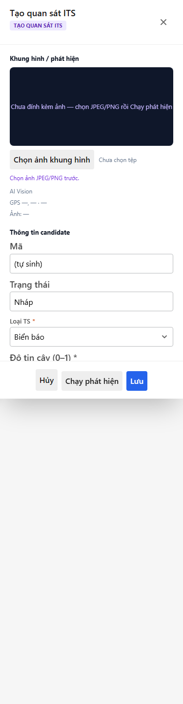
Hủy · Chạy phát hiện · Lưu xếp dọc trên màn hẹp.
* = bắt buộc khi Lưu.
| Nhãn trên màn | * | Cách điền |
|---|---|---|
| Loại TS | * | Chọn loại |
| Độ tin cậy (0–1) | * | Số 0–1 |
| Engine | * | Chọn nguồn nhận dạng |
| Vĩ độ | * | Số |
| Kinh độ | * | Số |
| Tuyến đường | * | Tra cứu tuyến |
| Nguồn | * | Mobile / Dashcam / CCTV |
| Ghi chú | Văn bản |
| Case | Thao tác | Kết quả |
|---|---|---|
| Thành công | Điền đủ ô * · Nhấn Lưu | Candidate ghi · danh sách cập nhật |
Thiếu * | Để trống ≥1 ô * · Nhấn Lưu | Không ghi · banner trường bắt buộc |
| Dữ liệu không hợp lệ | Ảnh vượt dung lượng cho phép | Không nhận tệp |
Mục đích: tra cứu sự kiện nhận dạng biển số, quá tốc độ / quá tải.
Cách thực hiện:
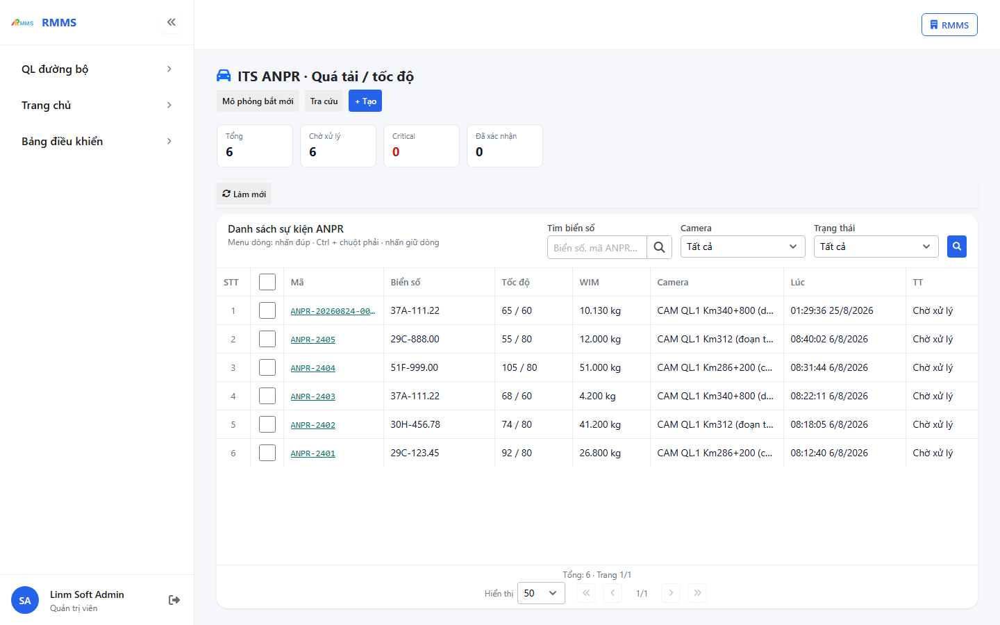
| Cột | Ý nghĩa |
|---|---|
| Mã | Mã sự kiện |
| Biển số | Biển số nhận dạng |
| Tốc độ | Tốc độ / giới hạn |
| WIM | Tải trọng |
| Camera | Camera nguồn |
| Lúc | Thời điểm |
| TT | Trạng thái |
| Mức lỗi | Mức vi phạm |
Mục đích: ghi sự kiện ANPR quá tải / tốc độ.
Cách thực hiện:
*.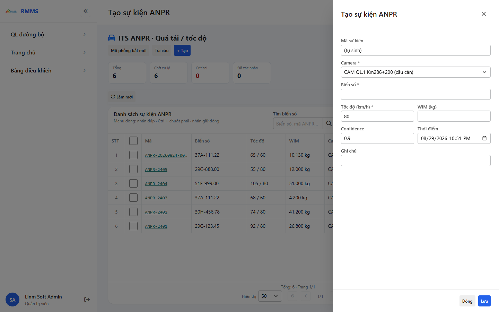
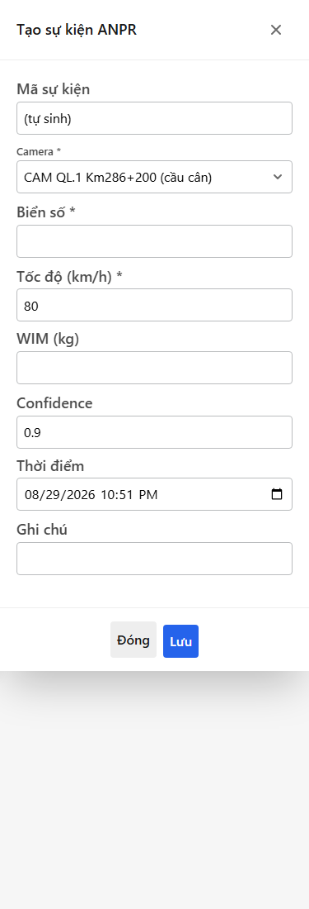
Đóng và Lưu xếp dọc trên màn hẹp.
* = bắt buộc khi Lưu.
| Nhãn trên màn | * | Cách điền |
|---|---|---|
| Mã sự kiện | Chỉ đọc | |
| Camera | * | Chọn camera |
| Biển số | * | Gõ biển số |
| Tốc độ (km/h) | * | Số |
| WIM (kg) | Số | |
| Confidence | Độ tin cậy | |
| Thời điểm | Ngày giờ | |
| Ghi chú | Văn bản |
| Case | Thao tác | Kết quả |
|---|---|---|
| Thành công | Điền đủ ô * · Nhấn Lưu | Sự kiện ghi · danh sách cập nhật |
Thiếu * | Để trống Camera / Biển số / Tốc độ · Nhấn Lưu | Không ghi · banner trường bắt buộc |
| Dữ liệu không hợp lệ | Tốc độ hoặc WIM không phải số | Không ghi · thông báo lỗi |
| Màn | Trạng thái | Nút |
|---|---|---|
| AI kiểm định | Draft + Critical | Tạo Vấn đề |
| Phát hiện TS / ITS biển báo | Candidate mở | Xác nhận thành tài sản · Bỏ qua |
| Ước lượng | Draft | Sửa · Xóa · Xác nhận |
| Dự báo | Đã có đoạn | Lưu ghi chú · Gắn kế hoạch BT · Ưu tiên đại tu · Chạy lại |
| ANPR | Pending | Sửa · Xác nhận · Bỏ qua · Tra cứu |
Không thấy nút Tạo mới? Tài khoản thiếu quyền tạo trên menu đó.
Lưu báo thiếu trường? Điền đủ ô * rồi nhấn Lưu lại.
Tìm không ra dòng? Xóa lọc, nhấn Làm mới hoặc Tìm lại.
Ước lượng không có Tạo mới trên thanh phải? Dùng Tạo từ sự cố hoặc Tạo từ detections.